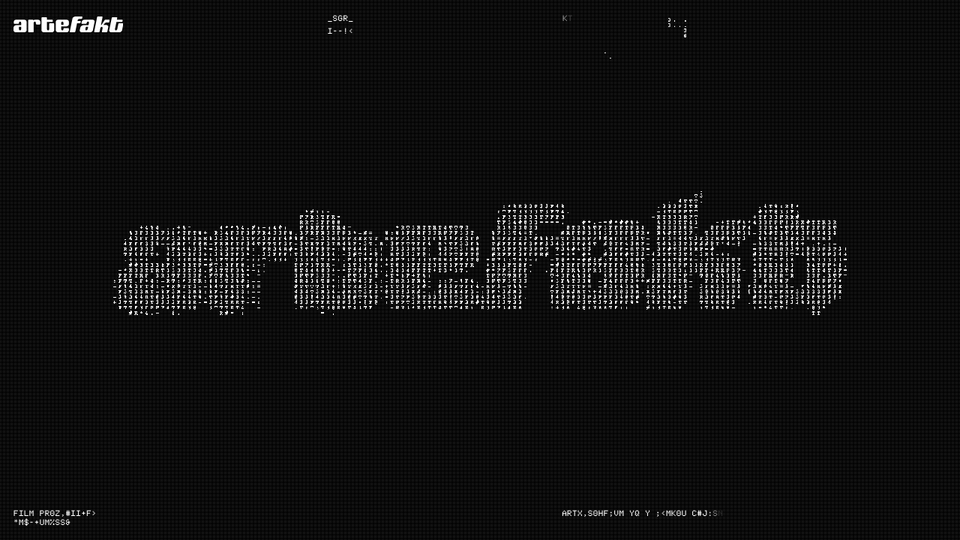

Artefakt.mov — capture reference
What stands out
- Dark field with a fine pixel/grid grain (CRT-ish read without full scanline gimmick).
- Huge wordmark top-left,
:/ MENUtop-right in a tight mono/pixel stack. - Center band of dense glyph/ASCII noise with big headline on top: “FILM PRODUCTION” / “REIMAGINED.”
- All-caps mono blurb anchored low; high contrast, minimal chrome.
Motion clip (~3s)

GIF: plans/assets/artefakt-mov-capture.gif
· still: plans/assets/artefakt-mov-screenshot.png
· regenerate: pnpm run capture-artefakt-gif
(or pnpm run capture-site-gif -- --url "https://artefakt.mov/" --out plans/assets/artefakt-mov-capture.gif)